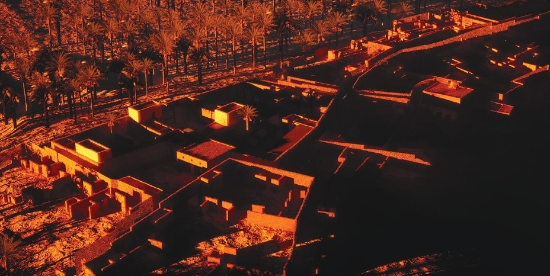
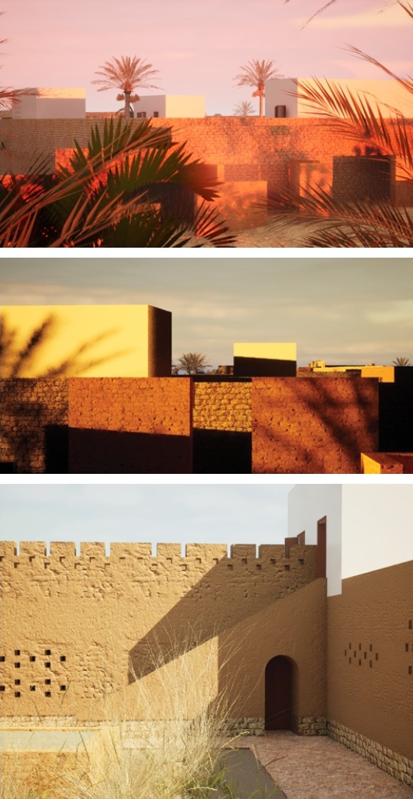
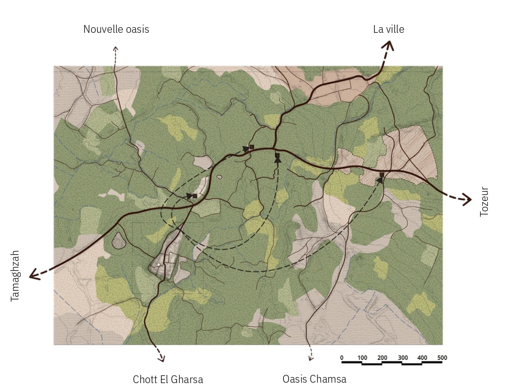
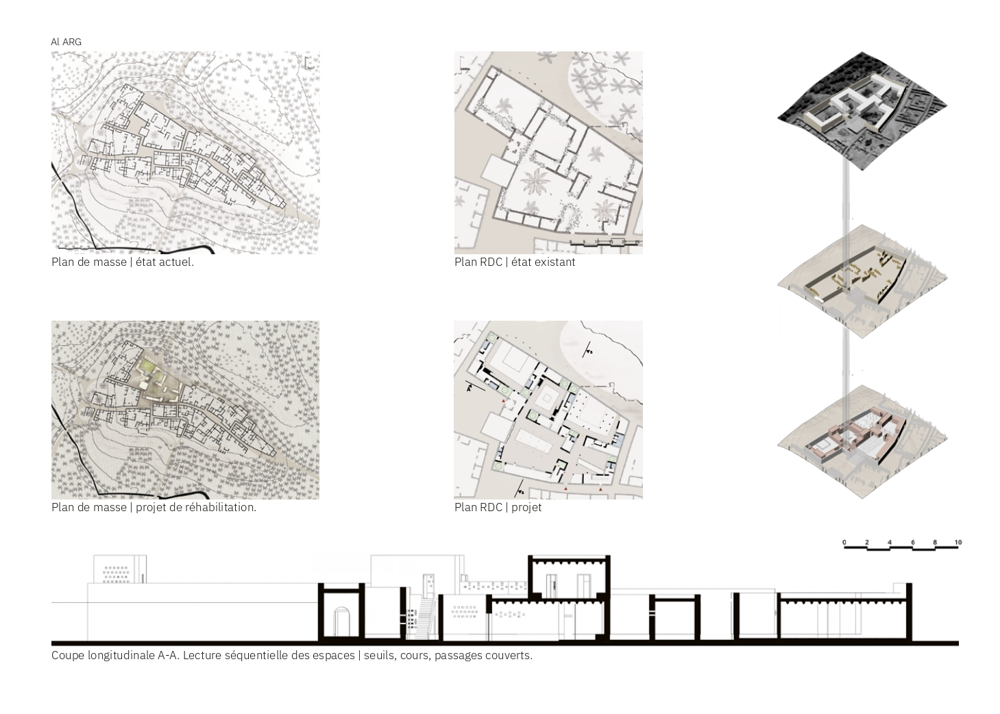
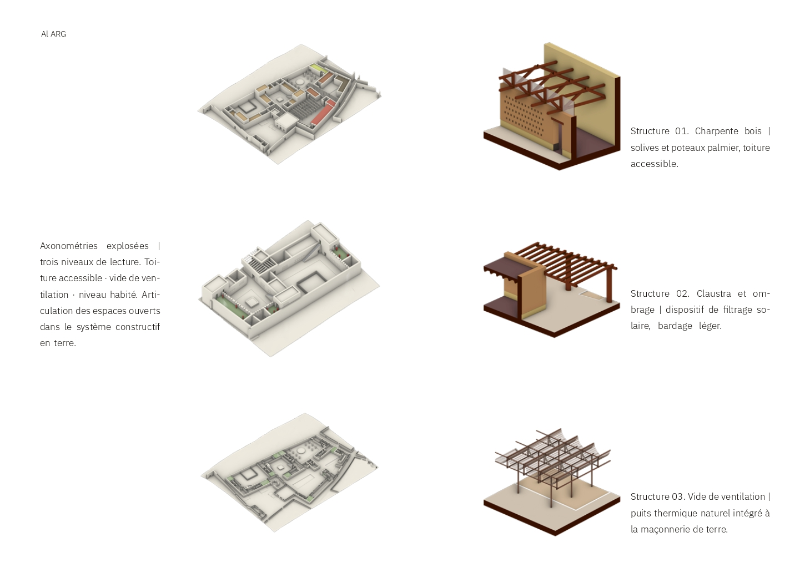

Academic · Thesis
Al-Arg
Degree thesis awarded Highest Honours with a unanimous jury at ENAU, Université de Carthage, 2024. The project proposes a strategy for the rehabilitation of the village of ARG, an abandoned settlement in the Tunisian interior whose population evacuated over the course of the twentieth century, leaving behind an intact but deteriorating fabric of vernacular stone architecture.
The thesis operates at three scales simultaneously: a territorial analysis of the conditions that produced the abandonment, an urban proposal for the reactivation of the village as a place of memory, culture, and temporary dwelling, and an architectural intervention on a key building within the fabric. The research draws on the theories of Carlo Scarpa, Giorgio Grassi, and the Italian school of urban morphology, and proposes a practice of rehabilitation that listens to the existing before adding anything new.
The project was founded on field surveys and heritage documentation carried out with the Société de Préservation du Village d'ARG over two years prior to the thesis, grounding the design work in direct material knowledge of the site.
Highest Honours · Unanimous Jury · ENAU, Université de Carthage · June 2024
Renders, Project Atmosphere

Territory

Plans, Existing and Project

Section and Structural Systems
